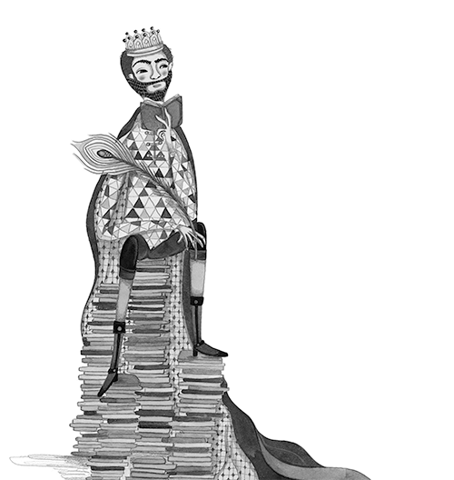
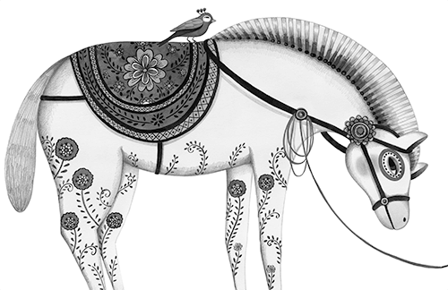
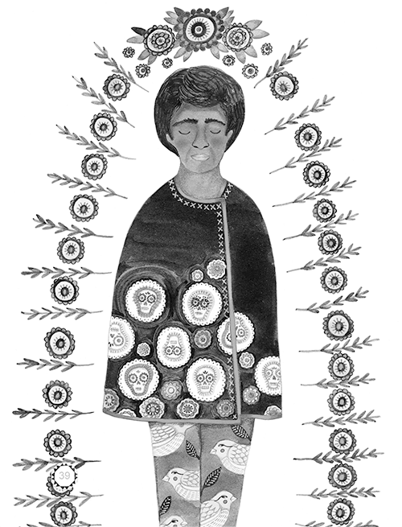
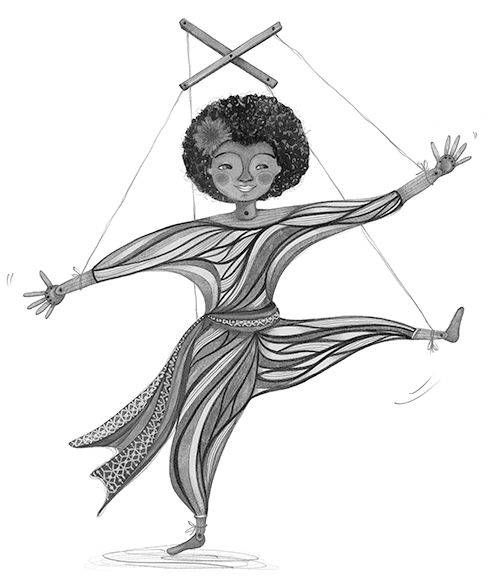

Érase una vez un príncipe tan romántico como uno jamás hubiera imaginado. Soñaba con una princesa dulce, agraciada, sencilla y sonriente con quien pudiera viajar y disfrutar de largos paseos y deliciosas viandas, entre aventuras y ocurrencias.
Para cumplir sus sueños, tres veces por semana el príncipe, acompañado de su legión más airosa y galante, se iba cabalgando a los reinos lejanos en busca de una joven que cumpliera con sus exigencias. Peticiones que, a ojos de otros y en especial a los de su paciente madre, más bien eran caprichos de juventud.
En el reino en el que tocara a la puerta, el príncipe y su tropa eran atendidos con donaire y elegancia. Con lupa y buen ojo el joven se sentaba durante horas a ver desfilar jovencitas de por aquí y de por allá. Su rutina era habitual, de su bolsillo sacaba una larga pluma y en una pequeña libreta anotaba con detalle todo lo que veía:
◊ Robusta, flaca, bien puesta, desgarbada…
◊ Seria, elocuente, silenciosa, imprudente…
◊ Elegante, casual, desfachatada…
◊ Letrada en inglés, mandarín, esperanto…
◊ Conocimientos en ciencias, repostería, equitación…

Pero, nada, nada, nada parecía convencerlo. Ninguna princesa, por bella y culta que fuera, satisfacía sus sagaces requerimientos. Así, una y otra vez, al atardecer, triste, confuso y penoso el joven volvía a su morada.
Hasta que un día, decidido, hizo una última declaración:
—¡La búsqueda ha llegado a su fin! Si el destino me ha hecho una mala jugada, no ha querido que encuentre a mi princesa soñada, no me interpondré más y dejaré que el futuro siga su curso.
>No hubo palabras de madre, asistentes, consejeros, familiares o amigos que hicieran echar para atrás tan tajante decisión y día tras día, el aburrimiento y la tristeza fueron tomándose el reino. Todo se volvió gris y opaco. Se adormecieron los sueños por cumplir y la esperanza en el reino se fue desvaneciendo en el lento transcurrir del tiempo y su andar. Empezó entonces una larga temporada de lluvias, truenos y relámpagos. Rezos, cantos y plegarias se hacían para apaciguar a los copiosos mares, los caudalosos ríos y para salvar las cosechas devastadas:
San Isidro labrador, quita el agua y pon el sol.
Hasta que un buen día, la neblina y el granizo dejaron a todos en el reino encerrados sin poder salir.
Pero de pronto, algo inesperado sucedió:
—Toc, toc, toc —se oyó en la puerta del palacio en medio de tanta tensión.
—Pero ¿quién podrá ser en medio de este inclemente aguacero?, dijeron el príncipe y la reina.
Ante la sorpresa, los dos fueron corriendo a abrir. Poco se veía entre tanta niebla, solo se oyó una dulce voz temblorosa del frío:
—Soy la princesa Miranda y su piedad vengo a buscar. Mi criada y yo nos hemos alejado de nuestro castillo, hemos perdido el camino y buscamos posada hasta que salga el sol.
Con bondad, el príncipe y su madre a la doncella y a su sirvienta dejaron pasar. Sin embargo ¿cómo saber que era una princesa de verdad entre tantos harapos y poca elegancia?
Pero la reina, como buena e instintiva madre, supo entonces cómo resolver el misterio.
—¡Que acomoden todos los colchones más finos, abullonados y suaves del castillo, unos encima de los otros, para tan distinguida princesa! —mandó la reina a sus sirvientes.
Lo que nadie esperaba era el plan de la reina madre. Una vez el dormitorio estuvo listo y sin sirvientes a la vista, en secreto ella entró y se dijo a sí misma:
—Esta pequeñita arveja acomodaré justo en medio de los colchones y así, si fuese una princesa de verdad, de esta manera no podría acomodarse ni conciliar el sueño jamás. Solo el amanecer nos dará la respuesta acertada o… ¿esperada?
Una vez acomodada la princesa, la sirvienta la cubrió con calentitas mantas y suaves arrullos. Pocos segundos pasaron antes de que la joven entrara en un profundo sueño gracias a su cansancio.
Pero ¡suissas!, a los pocos segundos también comenzó a revolotear la joven entre los esponjosos colchones. Chis, chas, se volteaba para el otro lado. Plifplaf, ponía la cabeza en los pies. Cataplumcataplam se caía del lecho tratando de acomodarse.
Una larga y ajetreada noche pasaron todos, cada uno en su habitación esperando el amanecer. La reina buscaba encontrar la respuesta a su inquietud, el príncipe no parecía alarmarse inquietarse ni con el vuelo de una mosca, mientras la princesa, ojerosa y cansada, anhelaba que dejara de llover para no volver a pasar otra noche en aquel reino.
—¿Cómo has dormido esta noche estimada doncella? —fue lo primero que la reina preguntó al ver a la princesa a la mañana siguiente.
—Disculpen ustedes mi mala educación —dijo la doncella—, pero no he podido pegar el ojo en tan magnífico lecho. No los culpo, debió ser el frío que me invadió los huesos y la piel.
Qué alivio y alegría sintió la reina al escuchar a la princesa. Cada queja suya era como música para sus oídos pues detrás de aquella desastrosa joven se escondía una princesa de verdad. La madre entonces gritó emocionada:
—Un aplauso a la doncella que ha demostrado ser una princesa de verdad. ¡Una pequeña arveja en su colchón no pudo soportar y mi hijo por fin se ha de casar!
Por un momento príncipe y princesa quedaron mudos ante la sorpresa de la reina madre. Hasta que…
—¡Silencio en la corte! —gritaron los dos jóvenes al mismo tiempo.
Sorprendidos por su respuesta tan sincronizada, príncipe y princesa se miraron boquiabiertos. Sus miradas sin palabras lo dijeron todo… ¡Era una señal inconfundible! ¡La vida los unía justo a la hora y en el momento indicado!
En ese instante los dos agraciados volvieron a mirarse tímidamente y de nuevo, al unísono, entre sonrisitas dijeron:
—¿Quieres irte a viajar conmigo?
—¿Pero qué están pensando? —dijo ofuscada la reina— ¿Quién ha dicho que así termina esta historia? ¡Aquel que haya oído historias de príncipes y princesas sabe cuál es la pregunta correcta: ¿Quieres casarte conmigo?
Pero los dos jovencitos dijeron que no con su cabeza y la reina sin palabras quedó. A decir verdad, ninguno de los dos estaba preparado para tal compromiso. Primero debían viajar por el mundo y descubrir si era amor o no lo que aquella repentina señal les había dejado ver.
Y así, sin pensarlo, ensillaron sus corceles y por el mundo al galope sus sueños fueron a conquistar. Si algún día se casaron o no, eso es un enigma que jamás se ha podido comprobar…
Por eso este cuento sin fin, entre caprichos de jovencitos y una reina resignada, llegó hasta aquí.

Romance del conde Olinos
Madrugaba el conde Olinos, mañanitas de San Juan,
pa’ dar agua a su caballo a las orillas del mar.
Mientras el caballo bebe él canta un dulce cantar,
las aves que iban volando se paraban a escuchar.
Bebe, mi caballo, bebe,
Dios te me libre del mal, de los vientos, de la tierra y de las furias del mar.
De la torre del palacio, la reina lo oyó cantar: mira hija cómo canta la sirena de la mar.
No es la sirenita, madre, la de tan bello cantar,
es la voz del conde Olinos que por mis amores va.
Si por tus amores viene,
¡no lo dejaré pasar!, que para casar contigo le falta sangre real.
Si lo manda matar, madre, juntos nos verá volar,
que si mata al Conde Olinos a mí gran pena me da.
La princesa con tristeza, no cesaba de llorar,
el murió a la medianoche y ella a los gallos cantar.
A ella como hija de reyes
la entierran en el altar,
a él como hijo de conde unos pasos más atrás.
la entierran en el altar,
a él como hijo de conde unos pasos más atrás.
Ella se volvió paloma, él un fuerte gavilán,
juntos vuelan por el cielo, juntos se van a gozar.
Caminante que caminas, deja tu sueño al andar,
navegante que navegas echa tu cuento a la mar…

Entreactos
Dime la letra, dime el color:
‘a’ de azulejo,
‘m’ de morado,
‘o’ de oro, ‘r’ de rosado.
‘A’ de amorcito robado, y eso lo dijo, ¡un príncipe enamorado!
Arroz con leche, me quiero casar,
con una señorita de la capital.
¿Que sepa coser, que sepa bordar, que sepa abrir la puerta para ir a jugar.
Con esta sí, con esta no, ¡con esta señorita, me caso yo!
Yo soy la viudita, la hija del rey, me quiero casar y no sé con quién.
Y siendo tan bella, no encuentras con quién,
escoge a tu gusto que aquí tienes cien.
Con esta sí, con esta no,
¡con esta señorita, me caso yo!
Hipiti hop, hipiti hop,
hipiti, hipiti, hipiti hop.
Un caballito galopa que opa, un caballito andando va.
Un caballito camina empinado, un caballito danzando va.
Hipiti hop, hipiti hop, hipiti, hipiti, hipiti hop.
Un caballito se ve muy cansado, un caballito al llano se va.
Un caballito que cierra los ojos, un caballito se va a descansar.
Rosita era linda, linda, linda, Rosita era linda, linda.
Vivía alegre en su hogar, en su hogar, en su hogar,
vivía alegre en su hogar, en su hogar.
Mas una bruja mala, mala, mala, mas una bruja, mala, mala.
Adormeció a Rosita así, bien así, bien así, adormeció a Rosita así, bien así.
Un espino creció alrededor, alrededor, alrededor,
un espino creció alrededor, alrededor.
Un día vino un lindo rey, lindo rey, lindo rey, un día vino un lindo rey, lindo rey.
Y despertó a Rosita así (muac), bien así
(muac), bien así (muac),
y despertó a Rosita así (muac), bien así (muac).
Celebraron la boda, boda, boda, Celebraron la boda, boda.
Amo a to, matarile, rile, ro.
—¿Qué quiere usted?, matarile, rile, ro.
M—Quiero a una reina hermosa, matarile, rile, ro.
—Escoja usted,
matarile, rile, ro.
—Yo escojo a la más querida. matarile, rile, ro.
¿Y qué oficio le pondría? matarile, rile, ro.
—La pondremos a correr, matarile, rile, ro.
Ese oficio no le gusta, matarile, rile, ro.
—Le pondremos a saltar, matarile, rile, ro.
—Ese oficio no le gusta, matarile, rile, ro.
—La pondremos a dormir, matarile, rile, ro.
Ese oficio no le gusta, matarile, rile, ro.
—La pondremos a girar, matarile, rile, ro.
Ese oficio no le gusta, matarile, rile, ro.
—La pondremos como estatua, matarile, rile, ro.
Ese oficio no le gusta, matarile, rile, ro.
—La pondremos a cantar, matarile, rile, ro.
Ese oficio sí le gusta, matarile, rile, ro.
—Le pondremos a bailar, matarile, rile, ro.
Ese oficio sí le gusta, matarile, rile, ro.
—La pondremos a volar, matarile, rile, ro.
Ese oficio más le gusta, matarile, rile, ro.
Amo a to, matarile, rile, ro.
